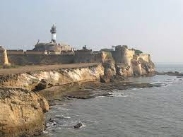
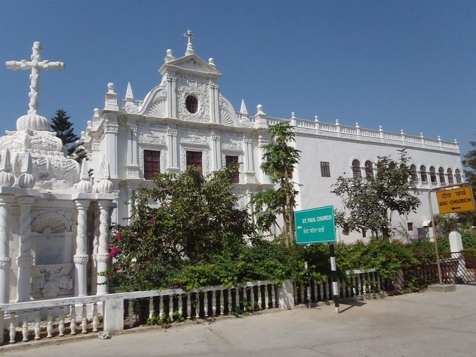
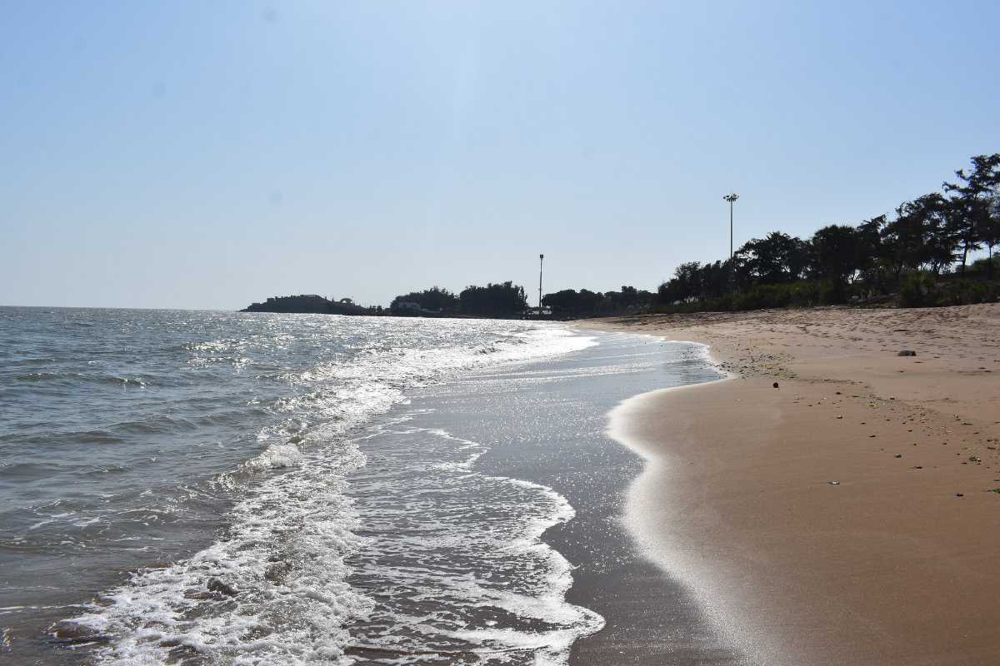
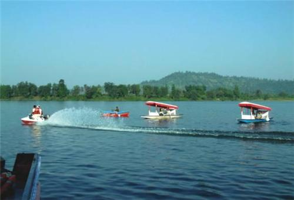

DADRA AND NAGAR HAVELI AND DAMAN AND DIU
Dadra is one of the two talukas in Dadra and Nagar Haveli district, India. It is an enclave lying a few kilometres north of Nagar Haveli and is surrounded by Gujarat. Dadra is located 6 km west of Silvassa, the capital of the district. Dadra consists of Dadra town and two other villages
Dadra and Nagar Haveli is showered with pleasant temperatures all year round. Although its summers can ascend to a scorching 41 degrees, the evenings cool down significantly with the tempering effects of the sea. November to March is the most ideal time to visit this Union Territory because of the chilly freshness.
TOP 4 DESTINATIONS:-
1.Diu Fort
2.St.Paul’s Church:
3.Gomtimata Beach
4.Silvassa
Diu fort

- About:
- Dating back to 1535 when Portuguese thought of staying India, they built this marvel. Standing still and portraying the greatness of Portugal rulers, this fort bathes in sunlight and glows in the moonlight and stays beside the enormous Arabian Sea each day. The existence of a huge lighthouse beside the fort adds another dimension to the panoramic view of the surrounding. The presence of various arms and the intelligence of Portuguese engineers have proved that strength is not always depicted by the existence of tangible substance but with the power of the mind. This brilliance of the engineers could be seen at the fort’s design. They used water for strengthening the fort’s base. This is a must visit spot for witnessing the panoramic view of the Arabian Sea.
St.Paul’s Church:

- About:
- While planning a day tour in Diu, this church should be included in the list. One of the best Baroque architectural examples prevails here in this church. Being named after St. Paul, the Apostle of Jesus, this church still continues to function and dates to 1601 AD. It is dedicated to Our Lady of Immaculate Conception and its structure is similar to the famous Bom Jesus Basilica which is in Goa.
Gomtimata Beach

- About:
- When you are looking for tranquility and are lucky enough to be in Daman, visiting Gomtimata Beach can help you achieve it. The place provides you with such an environment of peace and calmness that it helps you flush out the madness of the city. Various types of seashells, accessibility to the underwater world, spotting of beautiful coloured crabs, etc make this beach a must visit for the seekers of isolation and those who want to enjoy some Me-Time. Also, the soothing feeling the sunset view gives at this beach is beyond explanation.
Silvassa

- About:
- A former Portuguese colony, Silvassa is known for its scenic beauty, wildlife sanctuaries, beaches and facilities for water sports. Capital of the union territory of Dadra and Nagar Haveli, Silvassa lies between Gujarat and Maharashtra. Silvassa comprised 72 villages and was ruled by the Marathas till 1779. Later, it was offered to the Portuguese following a treaty. The many Roman-Catholic churches and stone walls stand testimony to the Portuguese rule as does the name Silvassa, which comes from the Portuguese word Silva or wood.